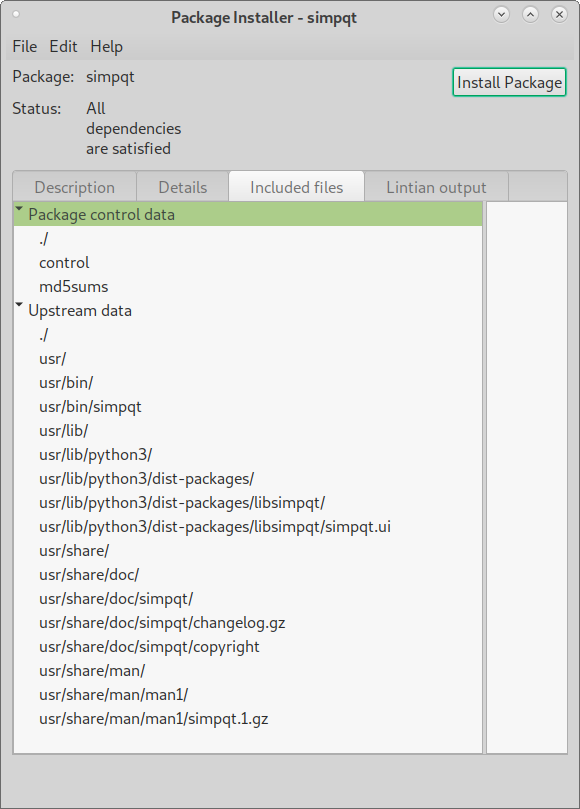
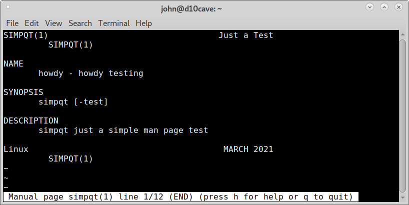

Building the deb¶
In the simpqt directory of the program in this case it’s a subdirectory of gui-deb open a terminal and build the deb with the following command.
dpkg-buildpackage -us -uc
To check the deb file open a terminal in the gui-deb directory and use lintian to verify. Use the command ls to list the files so you can copy and paste the file name instead of typing it out.
john@d10cave:~/gui-deb$ ls
simpqt simpqt_0.0.1_amd64.changes simpqt_0.0.1.dsc
simpqt_0.0.1_amd64.buildinfo simpqt_0.0.1_amd64.deb simpqt_0.0.1.tar.xz
john@d10cave:~/gui-deb$ lintian simpqt_0.0.1_amd64.deb
john@d10cave:~/gui-deb$
If there are no errors then nothing is displayed.
Right click on the deb and open with Gdebi.

You can see what files will be installed where on the Included files tab.
You can install the deb then open a terminal and type in simpqt to see the program is installed and works.

You can also type in man simpqt to see the man page.
